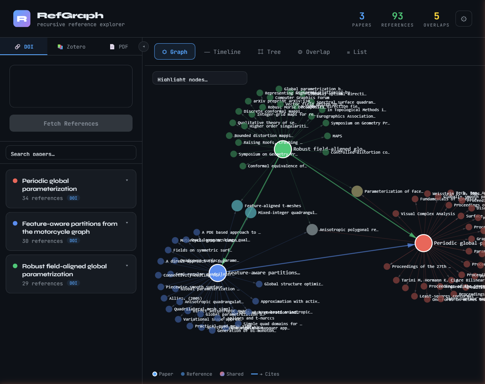
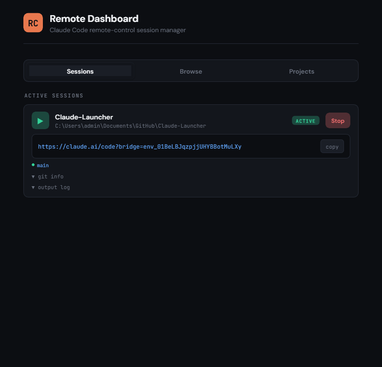

Projects
Interactive tools and software I've built

RefGraph
An interactive citation network explorer built with React and D3.js. Input a DOI or connect your Zotero library to visualize reference graphs, timelines, and relationship trees recursively.
View Project
Claude Launcher
A lightweight, single-file web dashboard for managing Claude Code sessions from any device. Browse filesystems, manage git operations, and start remote sessions over Tailscale or LAN.
View Project